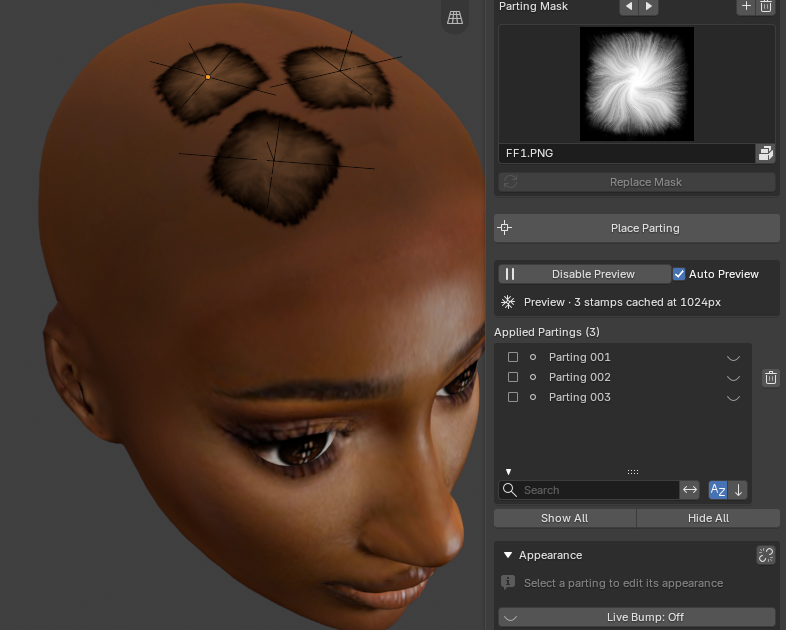
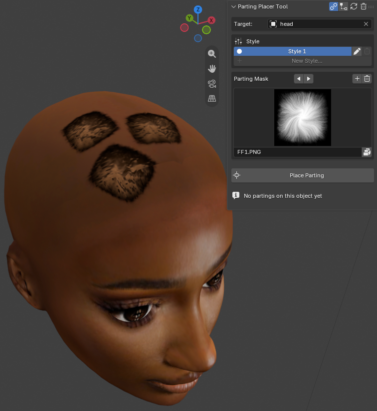
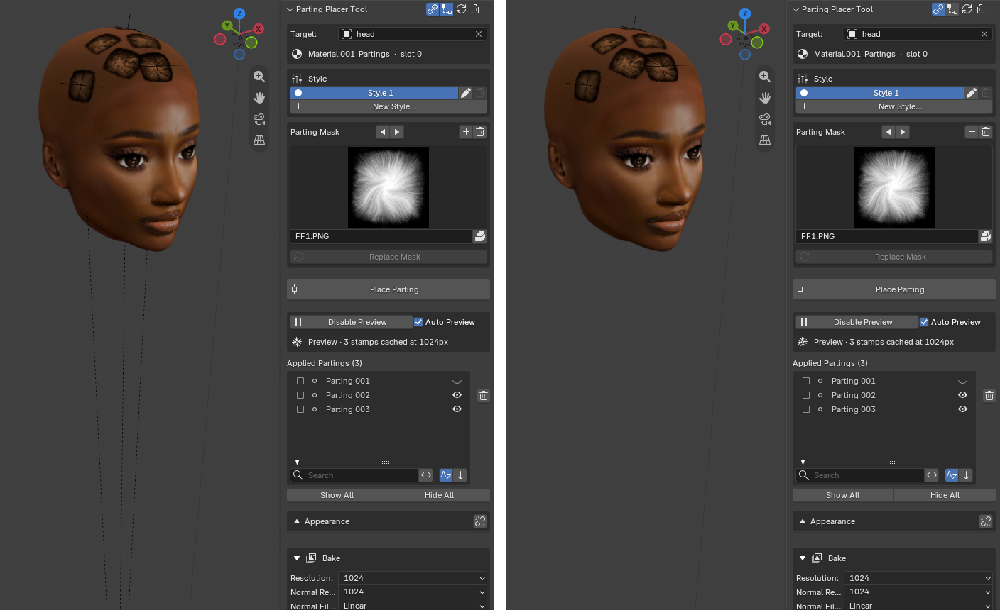

Keep The Viewport Fast¶
Applies to: Parting Placer V2.0.0 · Blender 4.4 · 5.2
Keep Blender quick to work in as the number of partings grows.
You Need First
What slows the viewport is the number of partings drawn live. Each fix below cuts that number. Start with the first.
Steps¶
- Select Enable Preview in the Preview box. The viewport switches to a low-resolution stand-in.

- Keep placing and editing. New partings stay live on top of the stand-in.
- Select Disable Preview when you want full shading again.
Leave Auto Preview ticked. It switches Preview on for you whenever you start placing on a head that already has partings.
When A Set Of Partings Is Settled¶
- Select Disable Preview.
- Turn on Live Bump at the bottom of the Appearance box, so the freeze keeps the parting relief.
- In the Bake box, select Bake Partings.
- Select Freeze Layer.
The frozen partings stay in your maps, and you carry on with a clean slate. You can freeze 3 times per material.

Other Things That Help¶
- Leave Live Bump off while you place. Bump is the slowest part of the material for Blender to rebuild.
- Close the Shader Editor while you work. An open node editor makes Blender redo the material as you go.
- Select the Relationship Lines icon in the panel header to hide the dashed lines from each Empty.

Bake Partings on its own does not speed anything up. Your partings stay live after a bake.
If You're Stuck
- Still slow? See The Viewport Is Slow.
- Preview stayed on after placing? See Preview Mode Is Still On After I Finish Placing.
Recommended next: Work On A Head With A Mirror Modifier